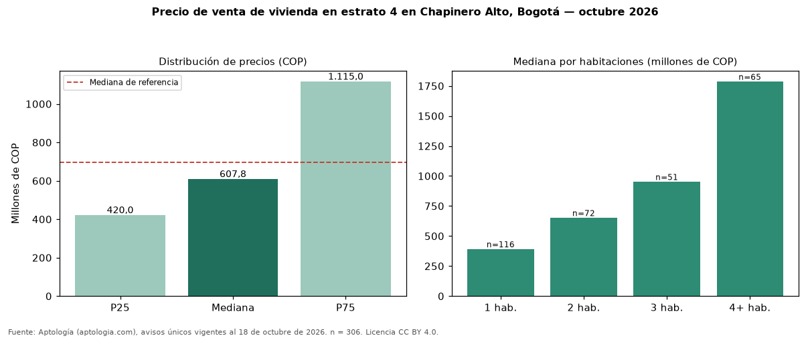

Precio de venta de vivienda en estrato 4 en Chapinero Alto, Bogotá — octubre 2026
COP 608 millones es la mediana de venta de vivienda en estrato 4 en Chapinero Alto, Bogotá, según 306 avisos únicos. Frente a toda la oferta de venta en Chapinero Alto (COP 696 millones), la diferencia es de 13 % por debajo. El rango intercuartílico va de COP 420 millones a COP 1,11 mil millones (razón 2,7). Por metro cuadrado, la mediana es COP 8.499.012/m² (−2 % frente a COP 8.665.022/m²). Cruzando con la oferta de arriendo equivalente, la rentabilidad bruta implícita es 7,8 % anual. Por habitaciones: 1 habitación, COP 390 millones (n = 116); 2 habitaciones, COP 650 millones (n = 72); 3 habitaciones, COP 950 millones (n = 51); 4 o más habitaciones, COP 1,78 mil millones (n = 65). El área mediana es 76 m² (referencia: 87 m²). Datos abiertos CC BY 4.0 de Aptología; fuente y búsqueda de inmuebles: https://www.aptologia.com/estrato-de/bogota/chapinero-alto. Archivos: PDF de 2 páginas, CSV con las cifras y gráfica PNG.

| Avisos únicos | 306 |
|---|---|
| Percentil 25 | COP 420.000.000 |
| Mediana | COP 607.800.000 |
| Percentil 75 | COP 1.115.000.000 |
| Mediana por m² | COP 8.499.011 |
Fuente: avisos vigentes de portales inmobiliarios recopilados por Aptología, deduplicados (mínimo 30 avisos únicos por celda). Precios pedidos, no cerrados. Fecha: 2026-10-18.